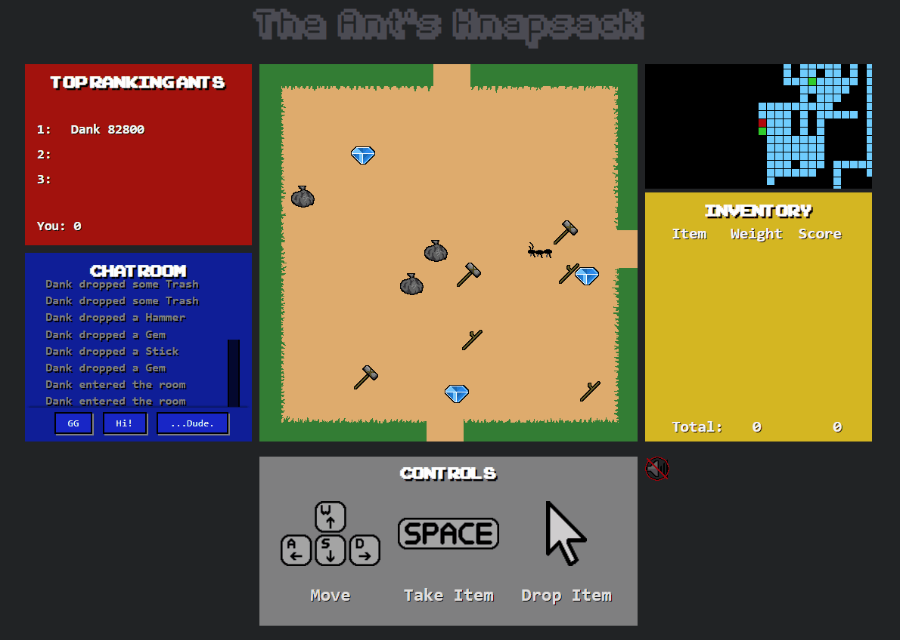
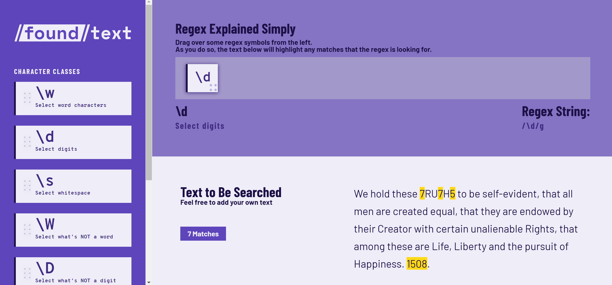
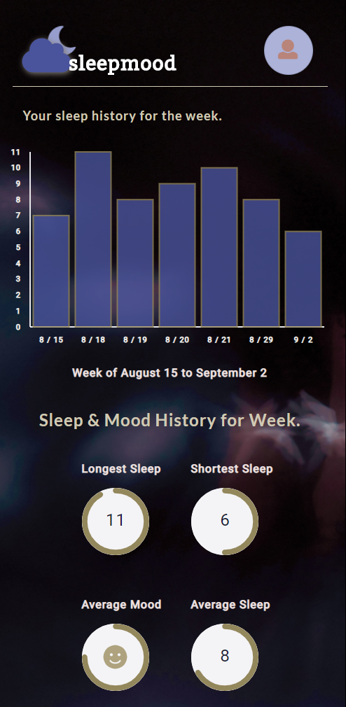
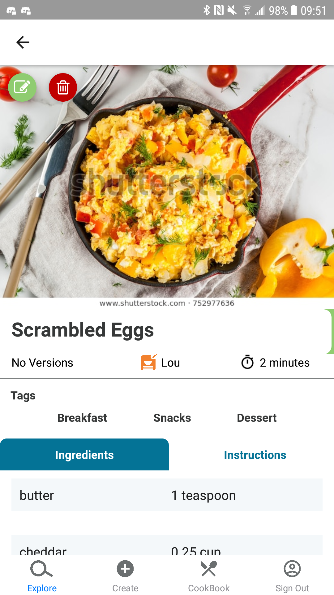
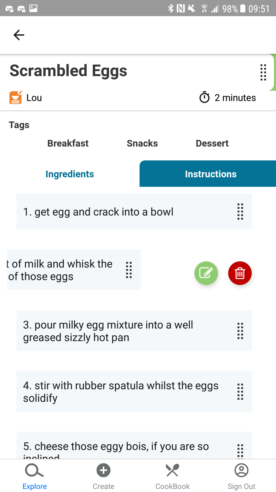

a non-traditional Full-Stack Engineer with experience building
Front-End and Back-End applications.
Before I found myself in the tech sphere, I was pursuing a career path in music composition,
taking classes at the University of North Texas and the Berklee College of Music. After some
time, I decided to create a webpage to advertise my work, and it was then that I discovered a
passion for web development.
What was once a world of musical composition became a world of component composition, route and
API creation, database connection. The drive I had to create and share impactful music
transposed itself into a drive to build and deploy countless features for web applications,
mobile apps, and even games.
I joined Lambda School, a coding bootcamp for Web Development, Data Science, or iOS Development,
in 2019, where I spent a year and a half honing my skills in software engineering and computer
science. In addition to these skills, I have led several groups of students as a Team Lead for
various development projects, giving them insight on real-world processes and strategies.
See some things I've created as a developer.
Projects
The Ant's Knapsack

Hustle! Collect items!
The Ant's Knapsack is a
fast paced web game where players can compete for the highest score by optimizing their
limited inventory.
-
Tech Stack: HTML/CSS/VanillaJS, PIXI, flask/SQLAlchemy, socketio,
PostgreSQL
- Worked remotely on a team of five developers to build the app in one week
- Built and programmed the Store Display Component using VanillaJS and CSS
- Styled in-game sprites
-
Programmed socketio routes from client to server for low-latency, and multiplayer
features
Front-End
and
Back-End
Source Code.
Noise Controller

Noise Controller is a
web application designed to help teachers keep their classes quiet through the use of
gamification.
- Tech Stack: HTML/CSS/JS, React/Redux, Node/Express, PostgreSQL
-
Worked with 4 other developers to create a marketing page, game application, and
database API to save classroom information
- Built marketing page to advertise product to users
-
Designed the user experience, including color palette, font choice, images, and
component placement
Github Source Code
Found Text

FoundText
is a website for Javascript programmers new to Regular Expressions. Using a simple
Drag'N'Drop feature, users can begin to understand how regex symbols correspond to certain
characters in a string of text.
- Tech Stack: React, Redux, Regex
- Created with 2 other web devlopers during a 24 hour coding hackathon
- Programmed text-field to highlight based on selected regular expressions
- Designed Drag'n'Drop feature to store each regex phrase in order
Github Source Code
Sleep Mood

Sleep Mood
is a mobile first web application that tracks not only users' sleep, but also how they feel
when they go to sleep each day. Every entry is saved to their specific user account, and
after a month, Sleep Mood will recommend how much sleep is needed to feel well rested!
- Tech Stack: React, Java/Spring, PostgreSQL
- Worked with 4 web developers to build an MVP for the app within 5 business days
- Led the product team with a kanban/scrum workflow to hit deadlines each day
-
Coded the backend server endpoints and authentication with Java/Spring, connecting to a
PostgreSQL database
Github Source Code
MyDish: Your Recipe Editor


Avalable on
Test Flight
or
The Google Play Store.
My Dish is a mobile app to help users save recipes in a brand new way. When a user edits a
recipe that they've created, they can view previous edits that they've made to a recipe.
Maybe they thought adding extra sugar would make a cake taste better, but now they've
changed their mind. With MyDish, they can go back to a previous version they've written, and
cook from that recipe!
- Tech Stack: React-native/Redux, ExpoCLI, Node/Express, PostgreSQL
-
Worked remotely with 6 developers over 10 weeks to iterate and add features to the
existing application
- Wrote tests for Front-end views, Back-End routes, and database models
- Deployed to Google Play Store
- Implemented inline editing to allow users to edit a recipe as they read it
View the
Front-End
and
Back-End
Source Code, currently continuing development.
Contact